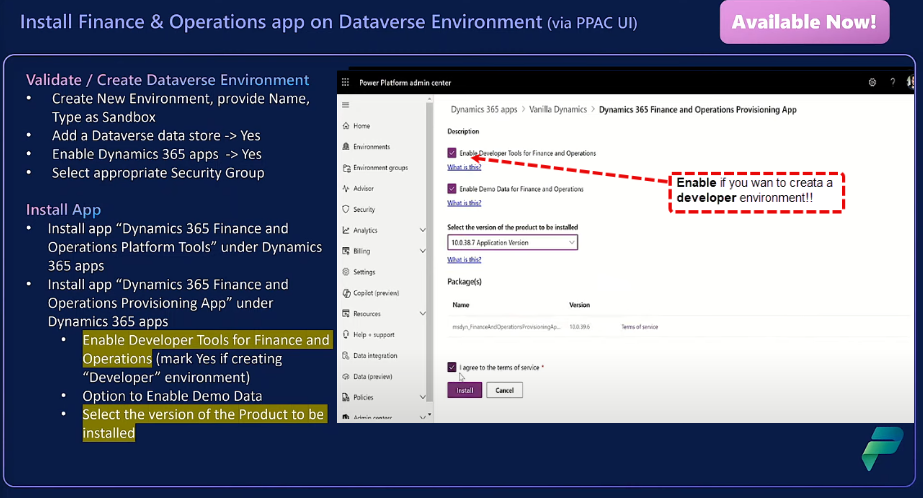

47:00 -> Unified Admin Experience for Finance and Operations | D365 Tech Talk
Install Finance & Operation App in Dataverse environment

Demo: Deploy the FNO app on an existing environment!!!


First install the Dynamics 365 Finance and Operations platform tools app

and when the installation is complete, proceed with the Dynamics 365 Finance and Operations Provisiong App